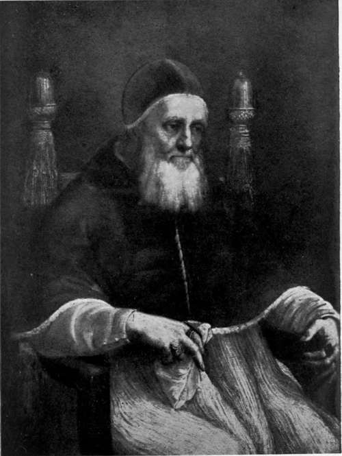

The Death Of Alexander VI. Part 3
Description
This section is from the book "The Life Of Cesare Borgia", by Rafael Sabatini. Also available from Amazon: The Life of Cesare Borgia.
The Death Of Alexander VI. Part 3
" The devil was seen to leap out of the room in the shape of a baboon. And a cardinal ran to seize him, and, having caught him, would have presented him to the Pope; but the Pope said, ' Let him go, let him go. It is the devil,' and that night he fell ill and died." 1
That story, transcending the things which this more practical age considers possible, is universally rejected ; but it is of vast importance to the historical student; for it is to be borne in mind that it finds a place in the pages of those same Diarii upon the authority of which are accepted many defamatory stories without regard to their extreme improbability so long as they are within the bounds of bare possibility.
After Alexander was dead it was said that water boiled in his mouth, and that steam issued from it as he lay in St. Peter's, and much else of the same sort, which the known laws of physiology compel so many of us very reluctantly to account exaggerations. But, again, remember that the source of these stories was the same as the source of many other exaggerations not at issue with physiological laws.
The circumstances of Alexander's funeral are in the highest degree scandalous, and reflect the greatest discredit upon his age.
On the morrow, as the clergy were chanting the Libera me, Domine in St. Peter's, where the body was exposed on a catafalque in full pontificals, a riot occurred, set on foot by the soldiers present for reasons which Burchard who records the event does not make clear.
1 " II diavolo sarebbe saltato fuori della camera in forma di babuino, et un cardinale corso per piarlo, e preso volendolo presentar al papa, il papa disse lasolo, lasolo die il diavolo. E poi la notte si amalo e morite." Marino Sanuto, Diarii.
The clerics fled for shelter to the sacristy, the chants were cut short, and the Pope's body almost entirely abandoned.
But the most scandalous happening occurred twenty four hours later. The Pope's remains were removed to the Chapel of Santa Maria delle Febbre by six bearers who laughed and jested at the expense of the poor corpse, which was in case to provoke the coarse mirth of the lower classes of an age which, setting no value upon human life, knew no respect for death. By virtue of the malady that had killed him, of his plethoric habit of body, and of the sweltering August heat, the corpse was decomposing rapidly, so that the face had become almost black and assumed an aspect grotesquely horrible, fully described by Burchard :
" Factus est sicut pannus vel morus nigerrimus, livoris totus plenus, nasus plenus, os amplissimum, lingua duplex in ore, que labia tota implebat, os apertum et adeo horribile quod nemo viderit unquam vel esse tale dixerit."
Two carpenters waited in the chapel with the coffin which they had brought; but, either through carelessness it had been made too narrow and too short, or else the body, owing to its swollen condition, did not readily fit into this receptable; whereupon, removing the mitre, for which there was no room, they replaced it by a piece of old carpet, and set themselves to force and pound the corpse into the coffin. And this was done " without candle or any light being burned in honour of the dead, and without the presence of any priest or other person to care for the Pope's remains." No explanation of this is forthcoming ; it was probably due to the panic earlier occasioned the clergy by the ducal men at arms.
The story that he had been poisoned was already spreading like a conflagration through Rome, arising out of the appearance of the body, which was such as was popularly associated with venenation.
But a Borgia in the role of a victim was altogether too unusual to be acceptable, and too much opposed to the taste to which the public had been educated; so the story must be edited and modified until suitable for popular consumption. The supper party at Cardinal Corneto's villa was remembered, and upon that a tale was founded, and trimmed by degrees into plausible shape.
Alexander had intended to poison Corneto so ran this tale that he might possess himself of the cardinal's vast riches; in the main a well worn story by now. To this end Cesare had bribed a butler to pour wine for the cardinal from a flask which he entrusted to him. Exit Cesare. Exit presently the butler, carelessly leaving the poisoned wine upon a buffet. (The drama, you will observe, is perfectly mechanical, full of author's interventions, and elementary in its " preparations"). Enter the Pope. He thirsts, and calls for wine. A servant hastens; takes up, of course, the poisoned flask in ignorance of its true quality, and pours for his Beatitude. Whilst the Pope drinks re enters Cesare, also athirst, and, seating himself, he joins the Pope in the poisoned wine, all unsuspicious and having taken no precautions to mark the flask. Poetic justice is done, and down comes the curtain upon that preposterous tragi farce.
Such is the story which Guicciardini and Giovio and a host of other more or less eminent historians have had the audacity to lay before their readers as being the true circumstances of the death of Alexander VI.
It is a noteworthy matter that in all that concerns the history of the House of Borgia, and more particularly those incidents in it that are wrapped in mystery, circumstantial elucidation has a habit of proceeding from the same quarters.
You will remember, for instance, that the Venetian Paolo Capello (though not in Rome at the time) was one of those who was best informed in the matter of the murder of the Duke of Gandia. And it was Capello again who was possessed of the complete details of the scarcely less mysterious business of Alfonso of Aragon. Another who on the subject of the murder of Gandia " had no doubts " as he himself expressed it was Pietro Martire d'Anghiera, in Spain at the time, whence he wrote to inform Italy of the true circumstances of a case that had happened in Italy.
It is again Pietro Martire d'Anghiera who, on November 10, 1503, writes from Burgos in Spain to inform Rome of the true facts of Alexander's death for it is in that letter of his that the tale of the flask of wine, as here set down, finds place for the first time.
It is unprofitable to pursue the matter further, since at this time of day even the most reluctant to reject anything that tells against a Borgia have been compelled to admit that the burden of evidence is altogether too overwhelming in this instance, and that it is proved to the hilt that Alexander died of the tertian fever then ravaging Rome.
And just as the Pope's death was the subject of the wildest fictions which have survived until very recent days, so too, was Cesare's recovery.
Again, it was the same Pietro Martire d'Anghiera who from Burgos wrote to inform Rome of what was taking place in the privacy of the Duke of Valentinois's apartments in the Vatican. Under his facile and magic pen, the jar of ice cold water into which Cesare was believed to have been plunged was transmuted into a mule which was ripped open that the feverstricken Cesare might be packed into the pulsating entrails, there to sweat the fever out of him.
But so poor and sexless a beast as this seeming in the popular mind inadequate to a man of Cesare's mettle, it presently improved upon and converted it into a bull so much more appropriate, too, as being the emblem of his house.
Nor does it seem that even then the story has gone far enough. Facilis inventis addere. There comes a French writer with an essay on the Borgias, than which submitted as sober fact nothing more amazingly lurid has been written. In this, with a suggestive cleverness entirely Gallic, he causes us to gather an impression of Cesare in the intestinal sudatorium of that eventrated bull, as of one who is at once the hierophant and devotee of a monstrous, foul, and unclean rite of some unspeakable religion a rite by comparison with which the Black Mass of the Abbe Gribourg becomes a sweet and wholesome thing.
But hear the man himself :
" Cet homme de meurtres et d'inceste, incarne dans l'animal des hecatombes et des bestialites antiques en evoque les monstrueuses images. Je crois entendre le taureau de Phalaris et le taureau de Pasiphae repondre, de loin, par d'effrayants mugissements, aux cris humains de ce bucentaure."
That is the top note on this subject. Hereafter all must pale to anti climax.
POPE JULIUS II (GIULIANO DELLA ROVERE). (From the portrait by Raffaele Sanzio.)
Continue to: